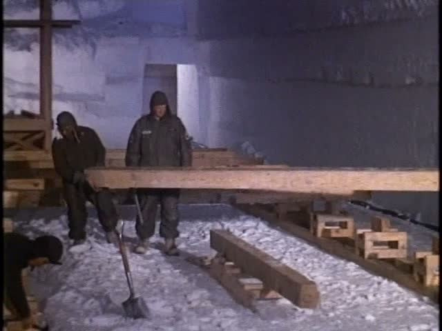
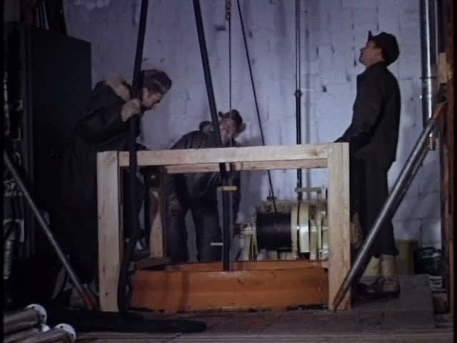
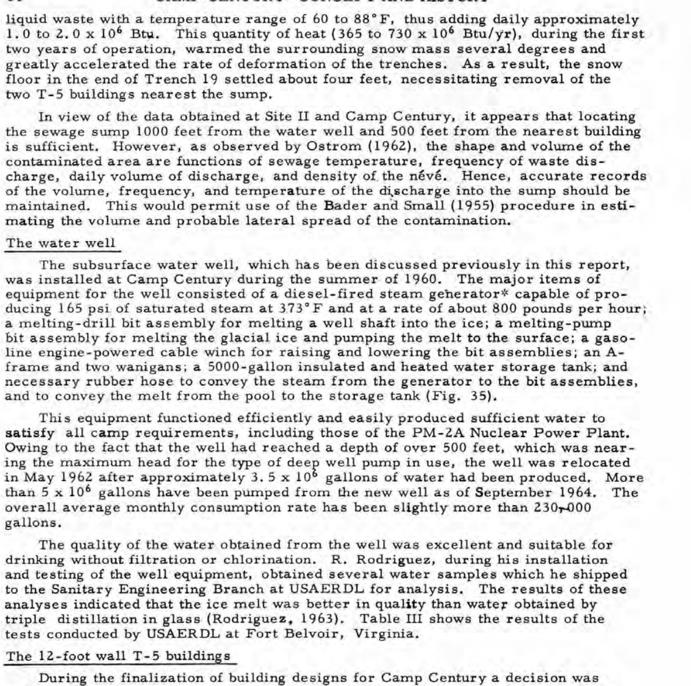
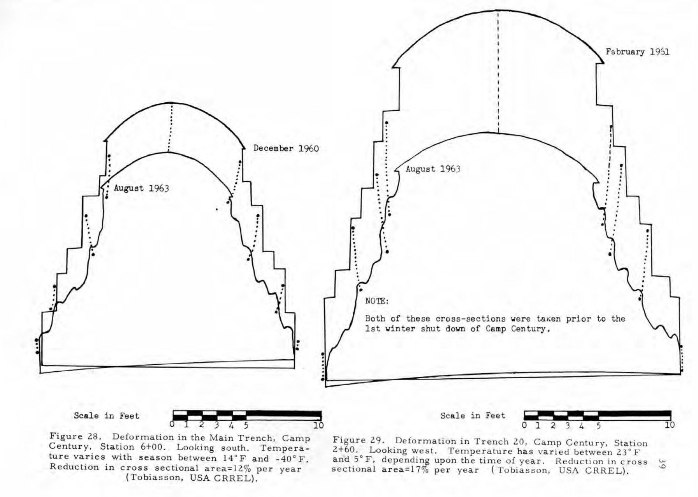
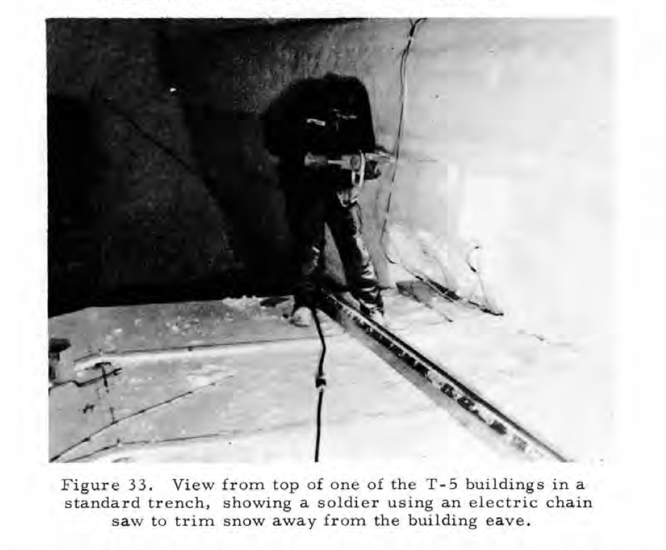
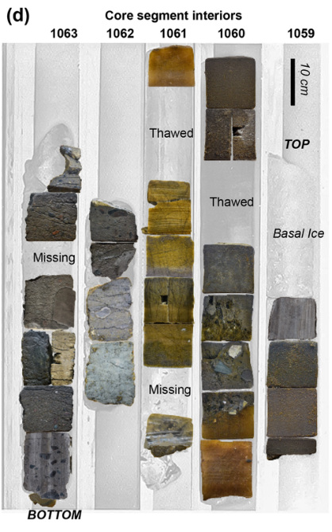
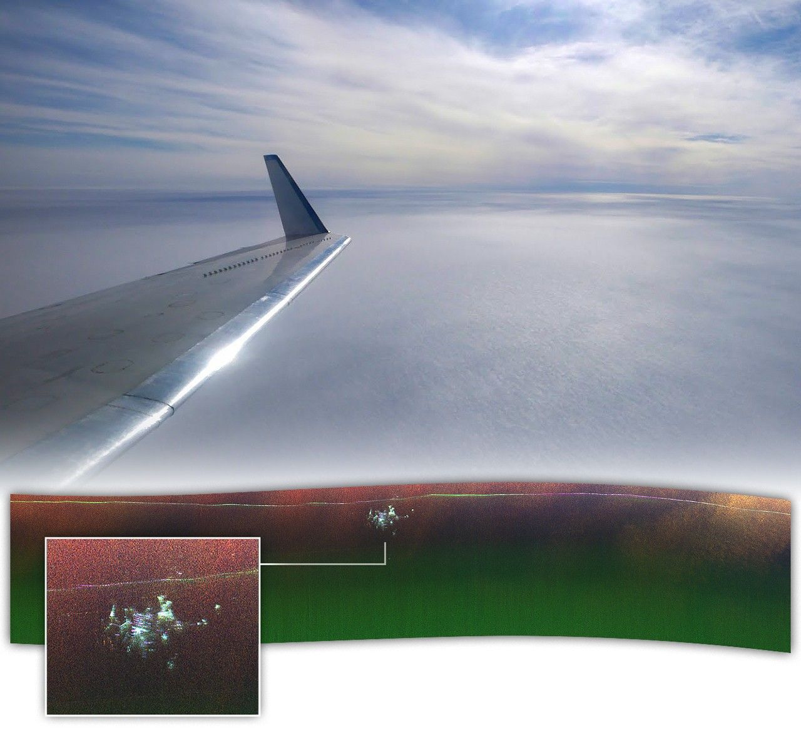
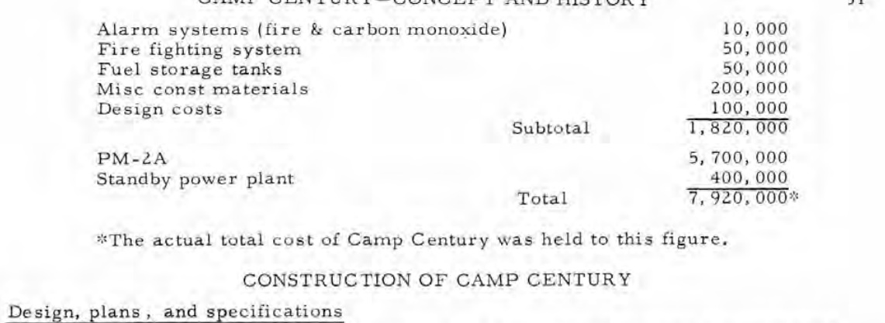
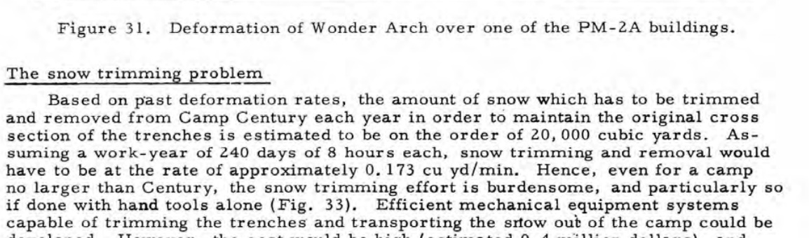
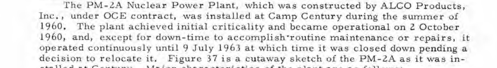

Camp Century — references and generation preparation
26 briefs:10 ImageGen illustrations,10 authentic documents/photos,6 exact charts. D07 source image HOLD. No generations executed, no final style approval. References and prompts follow V4; real motion remains primary.
G01 · A working city in shallow firn
CH01 · IMAGEGEN_REFERENCED_ILLUSTRATION · PREPARATION_READY_REFERENCES_REVIEWED_OUTPUT_NOT_GENERATED
One clear oblique cutaway through a compacted-snow trench. Show prefabricated occupied rooms beneath a corrugated arch, with a surface ramp. Match the actual ordinary rooms and arch proportions in the references. Show shallow buried construction, not a rock cavern, giant subterranean metropolis or natural ice cave. Explain material around the rooms, without drawing a complete invented site plan.


Limit: Qualitative cutaway, not measured geometry or a literal historic view. No1963 deformation rate in this opening illustration.
Motion: 4-6s gentle continuous reveal of surface then rooms, no shake; main evidence reveal later.
Open prompt / production brief
G02 · Cut-and-cover method
CH03 · IMAGEGEN_REFERENCED_ILLUSTRATION · PREPARATION_READY_REFERENCES_REVIEWED_OUTPUT_NOT_GENERATED
A complete three-phase engineering illustration across one continuous snow section: excavated trench by a Peter miller, roof arch placed above a trench, the completed covered opening. Use consistent scale and camera across phases. The machines must look like the actual reference. No bedrock drilling, TBM, underground blast or tunnel-boring machine.

Limit: A method explanation, not three measured stages of a particular filmed trench.
Motion: 6-8s: reveal each phase in action order with0.4-0.7s eased line/wash masks; no card slides.
Open prompt / production brief
G03 · Prefab room inside the arch
CH03 · IMAGEGEN_REFERENCED_ILLUSTRATION · PREPARATION_READY_REFERENCES_REVIEWED_OUTPUT_NOT_GENERATED
One close technical cutaway showing timber floor framing supporting a plain prefabricated room within a snow trench. Preserve the visible materials and ordinary construction of the references. Distinguish room roof from the surrounding snow arch with clear drafting. No invented equipment or dimensions.

Limit: Explains nesting of structures; does not assert measured clearances or prove a form-removal failure.
Motion: 5-7s controlled focus from floor framing to room and enclosing arch; single motivated move.
Open prompt / production brief
G04 · Heat changes the surrounding material
CH03 · IMAGEGEN_REFERENCED_ILLUSTRATION · PREPARATION_READY_REFERENCES_REVIEWED_OUTPUT_NOT_GENERATED
A small heated room inside a snow arch in cross-section. Sparse muted warm wash around the room indicates local warming; charcoal snow contours remain clear. Show the material as snow/firn, not liquid oceans or melting blue caverns. No quantitative temperature scale, radiation glow or reactor cutaway.

Limit: Qualitative thermal influence only; no computed heat field or citywide collapse.
Motion: 4-6s slow growth of restrained warm wash, stable camera.
Open prompt / production brief
G05 · Water supply and wastewater are different systems
CH04 · IMAGEGEN_REFERENCED_ILLUSTRATION · PREPARATION_READY_REFERENCES_REVIEWED_OUTPUT_NOT_GENERATED
Two clear separate subsurface systems within one finished cutaway: a meltwater well feeding a small water-supply building; a separate wastewater sump influencing nearby supporting snow locally. A thin physical separation makes the distinction obvious. The relative placement is conceptual, not a map. Do not connect drinking water to sewage or to a reactor coolant loop. Do not use the fan/air-well Fig32 as a drinking-water design. No plant internals, valves, operating parameters or radioactive visual symbols.


Limit: Not to scale; local sewage-related settlement, not reactor meltdown or all-camp failure.
Motion: 6-9s first follow clean-water branch, then reveal the separate sump influence; no racing arrows.
Open prompt / production brief
G06 · Why usable room disappears
CH06 · IMAGEGEN_REFERENCED_ILLUSTRATION · PREPARATION_READY_REFERENCES_REVIEWED_OUTPUT_NOT_GENERATED
A qualitative side-by-side interior snow-arch section, showing a plain room under an initially taller opening and a later reduced opening. Use the measured profile reference only to understand the direction and irregularity of deformation. No fabricated exact graph, time series, numeric axis or copied rate labels; exact data will use the authentic figure and separate verified chart.

Limit: Qualitative geometry, not a reconstruction of exact survey epochs.
Motion: 6-8s stable dissolve/morph between approved endpoint contours; no elastic wobble or camera shake.
Open prompt / production brief
G07 · The repeated maintenance job
CH06 · IMAGEGEN_REFERENCED_ILLUSTRATION · PREPARATION_READY_REFERENCES_REVIEWED_OUTPUT_NOT_GENERATED
A readable three-action maintenance vignette: a worker trims encroaching snow beside a prefab eave with the small corded electric chain saw in the actual photograph; loose cut snow is gathered; a small load is removed. One continuous technical illustration, no boxed cards. Preserve ordinary period workwear and the tool silhouette. No chainsaw attacking steel beams, blast demolition or fictional disaster.

Limit: Illustrates recurring labour.20,000yd3 is an estimate, not footage of actual annual removal.
Motion: 6-8s follow work in physical order; document Fig33 precedes it; no quantitative animation.
Open prompt / production brief
G08 · Deep core versus the shallow base
CH08 · IMAGEGEN_REFERENCED_ILLUSTRATION · PREPARATION_READY_REFERENCES_REVIEWED_OUTPUT_NOT_GENERATED
A vertical explanatory section through Greenland snow and ice, with a small shallow camp near the top and a deep scientific core reaching the ice-sediment boundary far below. Include a clear scale-break convention; it is not to scale. Show plain drilling equipment informed by the authentic1966 drilling-trench photo. The basal sediment belongs below the ice sheet, not inside a barracks tunnel.

Limit: Do not invent a precise drilling depth or use the2024 minimum burial depth as a1966 camp depth.
Motion: 6-9s track down the core path, pause at sediment; preserve the scale break.
Open prompt / production brief
G09 · From frozen sample to scientific evidence
CH08 · IMAGEGEN_REFERENCED_ILLUSTRATION · PREPARATION_READY_REFERENCES_REVIEWED_OUTPUT_NOT_GENERATED
An informative editorial drawing of a frozen sediment-bearing core cut face, a carefully held small sediment sample and a simple optical examination station, arranged in a clear visual progression. Follow the actual brown-grey archived core material; no gemstones or fantasy fossils. No identifiable plant species, numerical age, fake micrograph, invented data trace or historic government label. Use restrained report-style ink and flat wash, not glossy product photography.

Limit: Conceptual modern analysis; not a photo of a specific laboratory, fossil or dated specimen.
Motion: 5-7s one measured progression from core to sample; authentic sample photo remains the factual anchor.
Open prompt / production brief
G10 · What radar sees
CH08 · IMAGEGEN_REFERENCED_ILLUSTRATION · PREPARATION_READY_REFERENCES_REVIEWED_OUTPUT_NOT_GENERATED
A wide modern explanatory cutaway: a small airborne survey platform above the ice, a restrained broad side-looking radar sampling wedge, and buried structural traces below the surface. Use the actual NASA composite only to understand the kind of observation; never imitate or alter it into invented measurement data. No illuminated working underground city, people, accessible rooms, missile complex, fake heatmap or new radar returns.

Limit: Method illustration only; original NASA radar is D08. Do not interpret a distant bed reflection plotted above the camp as physically above it.
Motion: 5-7s reveal survey geometry, then cut to the untouched actual radar composite.
Open prompt / production brief
D01 · Authentic report identity
CH01 · AUTHENTIC_SOURCE_NO_IMAGEGEN · PREPARATION_READY_REFERENCES_REVIEWED_OUTPUT_NOT_GENERATED
Use original cover. Brief readable hold, then source-led cut to the relevant page. Never generate report text.

Limit: No fake stamp, altered date or decorative declassification overlay.
Motion: 6-10s source-led view; ease any zoom; marker sweep0.5-0.8s only behind a short verified text span; no shake or dashboard overlays.
Open prompt / production brief
D02 · Actual constructed base layout
CH03 · AUTHENTIC_SOURCE_NO_IMAGEGEN · PREPARATION_READY_REFERENCES_REVIEWED_OUTPUT_NOT_GENERATED
Use original Fig26. Focus on actual Main Street, living/service spaces and workshop; no all-page yellow box.
Limit: Dense original labels remain in scan; do not invent rooms or redraw the entire plan through ImageGen.
Motion: 6-10s source-led view; ease any zoom; marker sweep0.5-0.8s only behind a short verified text span; no shake or dashboard overlays.
Open prompt / production brief
D03 · Actual cost accounting
CH04 · AUTHENTIC_SOURCE_NO_IMAGEGEN · PREPARATION_READY_REFERENCES_REVIEWED_OUTPUT_NOT_GENERATED
Show the original PM-2A5,700,000 line and7,920,000 total with their table labels and actual-total footnote.

Limit: Period dollars; no inflation-adjusted claim and no generated accounting sheet.
Motion: 6-10s source-led view; ease any zoom; marker sweep0.5-0.8s only behind a short verified text span; no shake or dashboard overlays.
Open prompt / production brief
D04 · Actual measured profiles
CH06 · AUTHENTIC_SOURCE_NO_IMAGEGEN · PREPARATION_READY_REFERENCES_REVIEWED_OUTPUT_NOT_GENERATED
Keep Fig28/29 contours, dates, station names and scale bars. Reveal original profiles, then the two local-rate captions.
Limit: No yellow fill over the drawing, invented contour, extrapolation or whole-camp rate.
Motion: 6-10s source-led view; ease any zoom; marker sweep0.5-0.8s only behind a short verified text span; no shake or dashboard overlays.
Open prompt / production brief
D05 · Annual trimming estimate
CH06 · AUTHENTIC_SOURCE_NO_IMAGEGEN · PREPARATION_READY_REFERENCES_REVIEWED_OUTPUT_NOT_GENERATED
Focus precisely on estimated and20,000 cubic yards in the original paragraph; short translucent marker sweep behind text, not a line through it.

Limit: Keep the estimate qualifier attached to the quantity.
Motion: 6-10s source-led view; ease any zoom; marker sweep0.5-0.8s only behind a short verified text span; no shake or dashboard overlays.
Open prompt / production brief
D06 · The actual electric-chain-saw photograph
CH06 · AUTHENTIC_SOURCE_NO_IMAGEGEN · PREPARATION_READY_REFERENCES_REVIEWED_OUTPUT_NOT_GENERATED
Use the original Fig33 photograph and explanatory caption. Gentle focus on tool and eave; magnifier only if needed for readability.
Limit: A still photograph is not moving archive; do not generate a new worker and call it proof.
Motion: 6-10s source-led view; ease any zoom; marker sweep0.5-0.8s only behind a short verified text span; no shake or dashboard overlays.
Open prompt / production brief
D07 · GAO assessment qualification
CH07 · AUTHENTIC_SOURCE_NO_IMAGEGEN · DOCUMENT_BINARY_HOLD_HTTP403
Original Highlights Greenland paragraph required; local PDF acquisition returned403. Do not fake a GAO page. Use the source facts in editorial notes until genuine document image is acquired.
Limit: DOCUMENT_BINARY_HOLD; web text verified, local source image missing.
Motion: 6-10s source-led view; ease any zoom; marker sweep0.5-0.8s only behind a short verified text span; no shake or dashboard overlays.
Open prompt / production brief
D08 · Actual2024 radar composite
CH08 · AUTHENTIC_SOURCE_NO_IMAGEGEN · PREPARATION_READY_REFERENCES_REVIEWED_OUTPUT_NOT_GENERATED
Use untouched actual NASA composite; retain meaningful context, original radar data and credit.
Limit: Published25Nov2024, acquiredApril2024; not first radar detection, not an interior photograph.
Motion: 6-10s source-led view; ease any zoom; marker sweep0.5-0.8s only behind a short verified text span; no shake or dashboard overlays.
Open prompt / production brief
D09 · Actual1966 drilling-trench photograph
CH08 · AUTHENTIC_SOURCE_NO_IMAGEGEN · PREPARATION_READY_REFERENCES_REVIEWED_OUTPUT_NOT_GENERATED
Use untouched NARA photograph from NASA as the historical drilling reference; identify1966 in context.
Limit: Still image, not motion; do not attribute an exact drilling moment absent a more specific caption.
Motion: 6-10s source-led view; ease any zoom; marker sweep0.5-0.8s only behind a short verified text span; no shake or dashboard overlays.
Open prompt / production brief
D10 · Actual archived core interiors
CH08 · AUTHENTIC_SOURCE_NO_IMAGEGEN · PREPARATION_READY_REFERENCES_REVIEWED_OUTPUT_NOT_GENERATED
Use only Fig2d cropped modern2021 photographs with retained specimen scale and CC BY credit.
Limit: Photographed2021, published2024. Not a1966 photo or an ancient-plant micrograph.
Motion: 6-10s source-led view; ease any zoom; marker sweep0.5-0.8s only behind a short verified text span; no shake or dashboard overlays.
Open prompt / production brief
C01 · Supply distance
CH02 · DATA_LOCKED_CHART_NO_IMAGEGEN · PREPARATION_READY_REFERENCES_REVIEWED_OUTPUT_NOT_GENERATED
Reconstruct in editable SVG/Fusion from the accompanying exact CSV, with thin axes, generous label margins and one restrained emphasis. Dense facts stay deterministic.

Limit: Two-node route-length diagram, NOT a geographic map. No invented coordinates, road, route shape or Thule distance.
Motion: 4-7s eased data reveal; axes/labels fixed; no bouncing numbers, abrupt wipes or fabricated intermediate observations.
Open prompt / production brief
C02 · Construction cargo
CH02 · DATA_LOCKED_CHART_NO_IMAGEGEN · PREPARATION_READY_REFERENCES_REVIEWED_OUTPUT_NOT_GENERATED
Reconstruct in editable SVG/Fusion from the accompanying exact CSV, with thin axes, generous label margins and one restrained emphasis. Dense facts stay deterministic.
Limit: Zero-baseline bars1000 and4600; sum5600 identified as derived total. No invented quarterly time series.
Motion: 4-7s eased data reveal; axes/labels fixed; no bouncing numbers, abrupt wipes or fabricated intermediate observations.
Open prompt / production brief
C03 · Power plant share of initial cost
CH04 · DATA_LOCKED_CHART_NO_IMAGEGEN · PREPARATION_READY_REFERENCES_REVIEWED_OUTPUT_NOT_GENERATED
Reconstruct in editable SVG/Fusion from the accompanying exact CSV, with thin axes, generous label margins and one restrained emphasis. Dense facts stay deterministic.
Limit: Total7,920,000, PM-2A5,700,000, derived remainder2,220,000. Shared baseline/proportional lengths; no modern dollars.
Motion: 4-7s eased data reveal; axes/labels fixed; no bouncing numbers, abrupt wipes or fabricated intermediate observations.
Open prompt / production brief
C04 · Two different measured local rates
CH06 · DATA_LOCKED_CHART_NO_IMAGEGEN · PREPARATION_READY_REFERENCES_REVIEWED_OUTPUT_NOT_GENERATED
Reconstruct in editable SVG/Fusion from the accompanying exact CSV, with thin axes, generous label margins and one restrained emphasis. Dense facts stay deterministic.
Limit: 12% and17% annual area loss at two specified sections; not vertical inches, universal closure or a recorded annual series.
Motion: 4-7s eased data reveal; axes/labels fixed; no bouncing numbers, abrupt wipes or fabricated intermediate observations.
Open prompt / production brief
C05 · Proposal versus actual deployment
CH05 · DATA_LOCKED_CHART_NO_IMAGEGEN · PREPARATION_READY_REFERENCES_REVIEWED_OUTPUT_NOT_GENERATED
Reconstruct in editable SVG/Fusion from the accompanying exact CSV, with thin axes, generous label margins and one restrained emphasis. Dense facts stay deterministic.
Limit: High-level historical totals only. Facts from Nielsen2014p445; no missile or operational-network imagery, technical layouts or copyrighted article-page image.
Motion: 4-7s eased data reveal; axes/labels fixed; no bouncing numbers, abrupt wipes or fabricated intermediate observations.
Open prompt / production brief
C06 · Selected evidence chronology
CH07 · DATA_LOCKED_CHART_NO_IMAGEGEN · PREPARATION_READY_REFERENCES_REVIEWED_OUTPUT_NOT_GENERATED
Reconstruct in editable SVG/Fusion from the accompanying exact CSV, with thin axes, generous label margins and one restrained emphasis. Dense facts stay deterministic.

Limit: Show only the relevant2-3 dated events at each chapter transition. Do not invent a single uncontested end-of-occupation date; V4 discloses1966/1967 source differences.
Motion: 4-7s eased data reveal; axes/labels fixed; no bouncing numbers, abrupt wipes or fabricated intermediate observations.
Open prompt / production brief